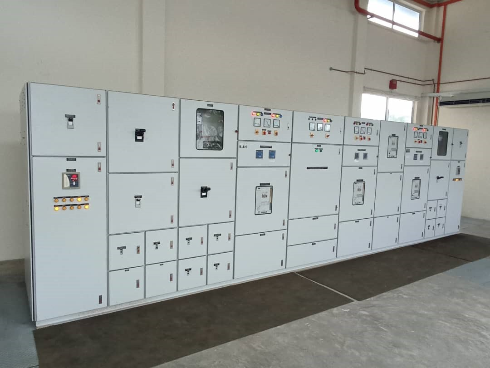

Company: Protech Control System
Duration: April 2021 to June 2023
-
Job Scope:
- Maintain customer base & follow up and negotiate customer’s new enquiry.
- Design & build automation control panel – electrical, control system, PLC & HMI
- Process, monitor & manage plant equipment breakdown maintenance work – paperwork, procurement, logistics, & scheduling.
- Monitor Kuching Wastewater Treatment Plant daily operation & equipment well-being.
- Automation system defect troubleshooting once abnormality arises.
- Provide periodic preventive maintenance schedule and perform breakdown equipment repair/replacement.
- Manage plant operator performance & work shift scheduling.
- Perform mechanical & electrical equipment repair work (ad-hoc)
- Monitoring company invoicing & payment status.
Project Portfolio:
Mechanical System Mainteannce

Electrical System Mainteannce
Automation System Fabrication